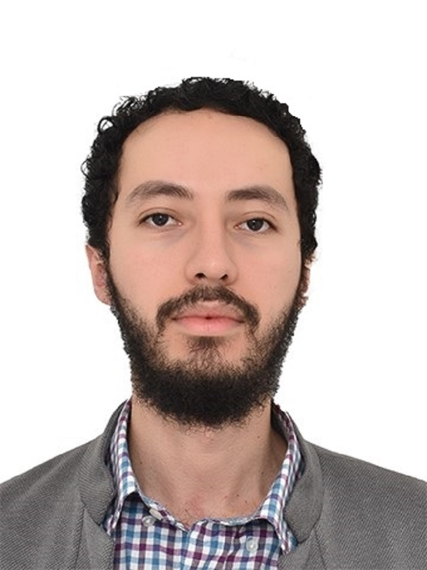

Sebastián Arredondo Posada
Un saludo, soy un autodidacta apasionado por el desarrollo web, estructuro con HTML y doy estilo con CSS. Estoy en camino con Javascript. También hago cosas con JAVA. Participé en la iniciativa de tecnología Medellín Tech Fest 2021